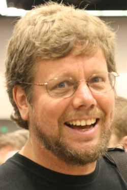

Guido Van Rossum
Van Rossum was born and raised in the Netherlands, where he received a master's degree in mathematics and computer science from the University of Amsterdam in 1982. He later worked for various research institutes, including the Dutch Centrum Wiskunde & Informatica (CWI), Amsterdam, the United States National Institute of Standards and Technology (NIST), Gaithersburg, Maryland, and the Corporation for National Research Initiatives (CNRI), Reston, Virginia.